<title>Terreno de Poente</title>
<link rel="preconnect" href="https://fonts.googleapis.com">
<link rel="preconnect" href="https://fonts.gstatic.com" crossorigin>
<link rel="stylesheet" href="https://fonts.googleapis.com/css2?family=Bricolage+Grotesque:opsz,wdth,wght@12..96,75..100,400..800&family=Newsreader:ital,opsz,wght@0,6..72,400;0,6..72,600;1,6..72,400&family=DM+Mono:wght@400;500&display=swap">
<style>
/* Layout: dossier de loteamento. Abre com a imagem aérea e um carimbo partido ao meio (dois lotes iguais);
   depois secções em coluna de leitura com pranchas largas. Azul = B-norte / Casa do Pátio, ocre = B-sul / Casa Comprida. */
:root {
  --bg: #eceee9;        /* cal fria */
  --sheet: #fafaf7;     /* papel das pranchas */
  --ink: #20221e;       /* granito escuro */
  --muted: #5e635b;
  --rule: #cbd0c6;
  --north: #3a6886;     /* B-norte · Casa do Pátio */
  --south: #9c5d26;     /* B-sul · Casa Comprida */
  --chip: #dfe3dc;
  --warn: #8f5310; --ok: #2f6b3a; --bad: #9b2f2a;
  --display: "Bricolage Grotesque", "Helvetica Neue", Arial, sans-serif;
  --body: "Newsreader", Georgia, "Times New Roman", serif;
  --mono: "DM Mono", ui-monospace, Menlo, Consolas, monospace;
  --measure: 66ch; --wide: 1200px;
}
@media (prefers-color-scheme: dark) { :root:not([data-theme="light"]) {
  --bg: #141613; --sheet: #1c1f1b; --ink: #e8eae4; --muted: #a2a79e; --rule: #373b35; --north: #8db7d4; --south: #dba06a;
  --chip: #2a2e28; --warn: #e3a95e; --ok: #8fc79a; --bad: #ef8f86; color-scheme: dark; } }
:root[data-theme="dark"] { --bg: #141613; --sheet: #1c1f1b; --ink: #e8eae4; --muted: #a2a79e; --rule: #373b35; --north: #8db7d4; --south: #dba06a;
  --chip: #2a2e28; --warn: #e3a95e; --ok: #8fc79a; --bad: #ef8f86; color-scheme: dark; }
* { box-sizing: border-box; }
body { background: var(--bg); color: var(--ink); font-family: var(--body); font-size: 17.5px; line-height: 1.58; margin: 0; padding-inline: 16px; padding-block: 0; }
a { color: var(--north); }
:focus-visible { outline: 2px solid var(--north); outline-offset: 2px; }
img { max-width: 100%; display: block; }
h1, h2, h3 { font-family: var(--display); text-wrap: balance; margin: 0; letter-spacing: -0.012em; }
h2 { font-size: clamp(1.55rem, 1.1rem + 1.7vw, 2.25rem); font-weight: 700; font-variation-settings: "wdth" 88; line-height: 1.08; }
h3 { font-size: 1.08rem; font-weight: 700; font-variation-settings: "wdth" 92; }
p { margin: 0; }
.eyebrow { font-family: var(--mono); font-size: 0.74rem; letter-spacing: 0.12em; text-transform: uppercase; color: var(--muted); }
.mono, td.n, th.n { font-family: var(--mono); font-variant-numeric: tabular-nums; }
.read { max-width: var(--measure); }
.note { font-size: 0.9rem; color: var(--muted); }
.N { color: var(--north); } .S { color: var(--south); }

/* ---------- abertura */
.hero { max-width: var(--wide); margin: 0 auto; padding-block: 22px 0; }
.hero figure { margin: 0; }
.hero img { width: 100%; aspect-ratio: 16 / 10; object-fit: cover; border-radius: 2px 2px 0 0; }
.carimbo { border: 1.5px solid var(--ink); border-top: none; background: var(--sheet); display: grid; grid-template-columns: minmax(0, 1.15fr) minmax(0, 1fr); }
.carimbo .name { padding: 22px 22px 20px; border-right: 1.5px solid var(--ink); display: grid; gap: 12px; align-content: start; }
.carimbo h1 { font-size: clamp(2.6rem, 1.4rem + 5.4vw, 5rem); font-weight: 800; font-variation-settings: "wdth" 80, "opsz" 96; line-height: 0.9; letter-spacing: -0.025em; }
.carimbo .lede { font-size: 1.08rem; max-width: 48ch; }
.split { display: grid; grid-template-columns: 1fr 1fr; }
.split > div { padding: 16px 18px 14px; display: grid; gap: 6px; align-content: start; min-width: 0; }
.split > div + div { border-left: 1.5px dashed var(--ink); }
.split .big { font-family: var(--display); font-weight: 800; font-variation-settings: "wdth" 78, "opsz" 96; font-size: clamp(2rem, 1.3rem + 2.6vw, 3.1rem); line-height: 0.95; font-variant-numeric: tabular-nums; }
.split .big small { font-size: 0.45em; font-weight: 600; margin-left: 2px; }
.split .lot { font-family: var(--mono); font-size: 0.74rem; letter-spacing: 0.1em; text-transform: uppercase; }
.split dl { margin: 6px 0 0; display: grid; gap: 4px; }
.split dl div { display: flex; justify-content: space-between; gap: 10px; border-top: 1px solid var(--rule); padding-top: 4px; }
.split dt { font-size: 0.86rem; color: var(--muted); }
.split dd { margin: 0; font-family: var(--mono); font-size: 0.86rem; font-variant-numeric: tabular-nums; text-align: right; }
@media (max-width: 820px) { .carimbo { grid-template-columns: 1fr; } .carimbo .name { border-right: none; border-bottom: 1.5px solid var(--ink); } }
@media (max-width: 460px) { .split { grid-template-columns: 1fr; } .split > div + div { border-left: none; border-top: 1.5px dashed var(--ink); } }

nav.toc { max-width: var(--wide); margin: 0 auto; padding-block: 14px; display: flex; flex-wrap: wrap; gap: 6px 18px; font-family: var(--mono); font-size: 0.8rem; border-bottom: 1px solid var(--rule); }
nav.toc a { color: var(--muted); text-decoration: none; } nav.toc a:hover { color: var(--ink); }
section { max-width: var(--wide); margin: 0 auto; padding-block: 46px; border-bottom: 1px solid var(--rule); display: grid; gap: 22px; }
section > header { display: grid; gap: 8px; }
.two { display: grid; grid-template-columns: minmax(0, 1.1fr) minmax(0, 1fr); gap: 32px; align-items: start; }
.two > * { min-width: 0; }
@media (max-width: 880px) { .two { grid-template-columns: 1fr; } }
.stack { display: grid; gap: 14px; }
.prancha { background: #fbfaf7; border: 1px solid var(--rule); border-radius: 2px; overflow-x: auto; }
.prancha img { width: 100%; min-width: 660px; height: auto; }
.prancha.tall img { min-width: 560px; }
.two .prancha img { min-width: 0; }
.cap { font-size: 0.9rem; color: var(--muted); }

/* ---------- peças do kit */
.kit { list-style: none; margin: 0; padding: 0; display: grid; grid-template-columns: repeat(auto-fit, minmax(210px, 1fr)); gap: 0; border: 1px solid var(--rule); background: var(--sheet); }
.kit li { padding: 14px 16px; border-right: 1px solid var(--rule); border-bottom: 1px solid var(--rule); display: grid; gap: 4px; align-content: start; min-width: 0; }
.kit b { font-family: var(--display); font-variation-settings: "wdth" 90; font-size: 1rem; }
.kit .dims { font-family: var(--mono); font-size: 0.82rem; color: var(--muted); }
.houses { display: grid; grid-template-columns: 1fr 1fr; gap: 22px; }
.houses article { display: grid; gap: 12px; align-content: start; min-width: 0; padding-top: 12px; border-top: 4px solid currentColor; }
.houses article h3 { font-size: 1.5rem; font-variation-settings: "wdth" 84; }
.houses article p { color: var(--ink); }
.houses ul { margin: 0; padding-left: 1.1em; display: grid; gap: 6px; color: var(--ink); }
@media (max-width: 760px) { .houses { grid-template-columns: 1fr; } }

/* ---------- imagens */
.gallery { display: grid; grid-template-columns: repeat(2, minmax(0, 1fr)); gap: 18px; }
.gallery figure { margin: 0; display: grid; gap: 8px; min-width: 0; }
.gallery img { width: 100%; aspect-ratio: 16 / 10; object-fit: cover; border-radius: 2px; }
.gallery figcaption { font-size: 0.92rem; color: var(--muted); }
.gallery figcaption b { color: var(--ink); font-family: var(--display); font-variation-settings: "wdth" 90; font-size: 0.95rem; }
@media (max-width: 700px) { .gallery { grid-template-columns: 1fr; } }

/* ---------- desenhos */
.tabs { display: flex; flex-wrap: wrap; gap: 6px; }
.tabs button { font-family: var(--mono); font-size: 0.8rem; padding: 7px 11px; border: 1px solid var(--rule); background: transparent; color: var(--ink); border-radius: 2px; cursor: pointer; }
.tabs button[aria-selected="true"] { background: var(--ink); color: var(--bg); border-color: var(--ink); }

/* ---------- 3D */
.viewer { position: relative; background: var(--sheet); border: 1px solid var(--rule); border-radius: 2px; overflow: hidden; aspect-ratio: 16 / 10; max-width: 100%; }
.viewer img.poster { width: 100%; height: 100%; object-fit: cover; }
.viewer canvas { position: absolute; inset: 0; width: 100% !important; height: 100% !important; touch-action: none; }
.viewer .overlay { position: absolute; inset: auto 0 0 0; padding: 14px; display: flex; flex-wrap: wrap; gap: 10px; align-items: center; background: linear-gradient(transparent, rgba(0,0,0,0.55)); }
.btn { font-family: var(--mono); font-size: 0.82rem; padding: 9px 14px; border-radius: 2px; border: 1px solid var(--north); background: var(--north); color: var(--sheet); cursor: pointer; }
.btn.ghost { background: transparent; color: var(--ink); border-color: var(--rule); }
.controls3d { display: flex; flex-wrap: wrap; gap: 6px 8px; align-items: center; }
.controls3d label { font-family: var(--mono); font-size: 0.8rem; display: inline-flex; gap: 6px; align-items: center; padding: 6px 4px; }
#status3d { font-family: var(--mono); font-size: 0.8rem; color: #fff; }

/* ---------- tabelas */
.tbl { overflow-x: auto; }
table { border-collapse: collapse; width: 100%; font-size: 0.95rem; }
th, td { text-align: left; padding: 7px 8px; border-bottom: 1px solid var(--rule); vertical-align: top; }
th { font-family: var(--mono); font-size: 0.7rem; letter-spacing: 0.08em; text-transform: uppercase; color: var(--muted); font-weight: 500; }
td.n, th.n { text-align: right; white-space: nowrap; }
tr.sum td { font-weight: 600; border-bottom: 1.5px solid var(--ink); }
tr.sub td { color: var(--muted); }
tr.grp td { font-family: var(--mono); font-size: 0.72rem; letter-spacing: 0.08em; text-transform: uppercase; color: var(--muted); padding-top: 14px; }
.cols { display: grid; grid-template-columns: repeat(2, minmax(0, 1fr)); gap: 28px; align-items: start; }
.cols > * { min-width: 0; }
@media (max-width: 820px) { .cols { grid-template-columns: 1fr; } }
.chip { font-family: var(--mono); font-size: 0.72rem; padding: 2px 7px; border-radius: 2px; background: var(--chip); white-space: nowrap; }
.chip.ok { color: var(--ok); } .chip.warn { color: var(--warn); } .chip.bad { color: var(--bad); }
.bignums { display: grid; grid-template-columns: repeat(4, minmax(0, 1fr)); border: 1.5px solid var(--ink); background: var(--sheet); }
.bignums div { padding: 14px 16px; border-right: 1px solid var(--rule); display: grid; gap: 4px; min-width: 0; }
.bignums div:last-child { border-right: none; }
.bignums .v { font-family: var(--display); font-weight: 700; font-variation-settings: "wdth" 82; font-size: clamp(1.4rem, 1.05rem + 1.4vw, 2.1rem); font-variant-numeric: tabular-nums; }
.bignums .kk { font-size: 0.88rem; color: var(--muted); }
@media (max-width: 760px) { .bignums { grid-template-columns: 1fr 1fr; } .bignums div:nth-child(2) { border-right: none; } .bignums div:nth-child(-n+2) { border-bottom: 1px solid var(--rule); } }
details { border-top: 1px solid var(--rule); padding-top: 10px; }
summary { cursor: pointer; font-family: var(--mono); font-size: 0.85rem; }
.alert { border: 1.5px solid var(--bad); background: var(--sheet); padding: 16px 18px; display: grid; gap: 8px; }
.alert h3 { color: var(--bad); }
footer { max-width: var(--wide); margin: 0 auto; padding-block: 28px 56px; font-size: 0.86rem; color: var(--muted); display: grid; gap: 8px; }
@media (prefers-reduced-motion: reduce) { * { scroll-behavior: auto !important; } }
</style>

<header class="hero">
  <figure>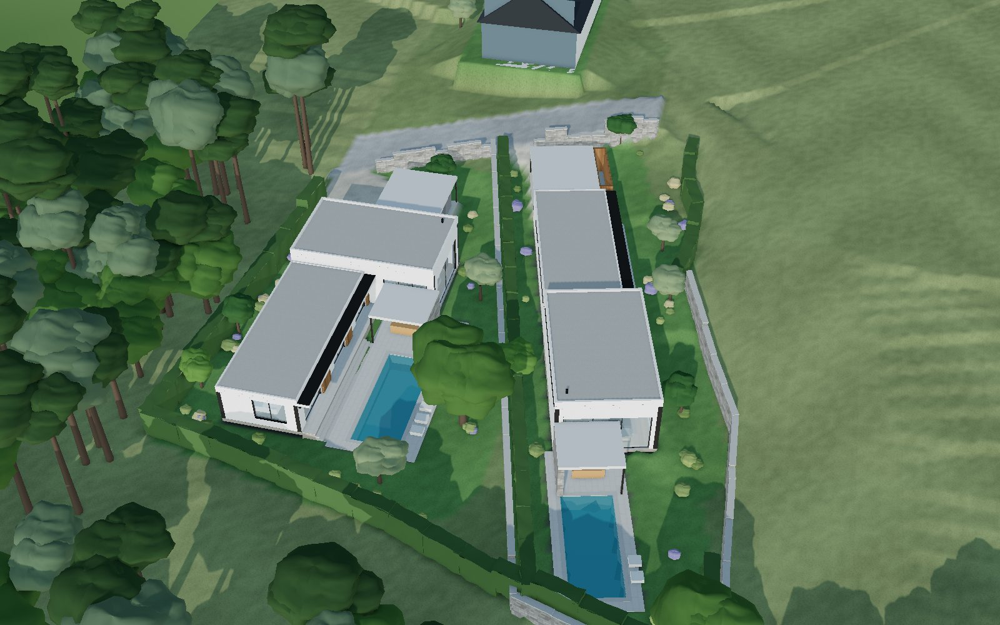</figure>
  <div class="carimbo">
    <div class="name">
      <span class="eyebrow">Carreço · área resultante B do PIP · 03/10/2026</span>
      <h1>Terreno de Poente</h1>
      <p class="lede">A área a poente da estrada nova dividida em dois lotes iguais, com uma casa T3 térrea em cada um. As duas casas usam as mesmas peças, montadas de maneira diferente: a Casa do Pátio fecha-se em L à volta da piscina; a Casa Comprida segue a forma do lote e acaba na sala, com a piscina a poente.</p>
    </div>
    <div class="split">
      <div class="N">
        <span class="lot">Lote B-norte</span>
        <span class="big">817,8<small>m²</small></span>
        <dl>
          <div><dt>Frente para a estrada</dt><dd>15,45 m</dd></div>
          <div><dt>Casa do Pátio</dt><dd>T3 · 169,9 m²</dd></div>
          <div><dt>Casa (sem IVA)</dt><dd>≈ 162,0 k€</dd></div>
          <div><dt>Piscina 9 × 3,5</dt><dd>≈ 19,2 k€</dd></div>
        </dl>
      </div>
      <div class="S">
        <span class="lot">Lote B-sul</span>
        <span class="big">817,8<small>m²</small></span>
        <dl>
          <div><dt>Frente para a estrada</dt><dd>15,45 m</dd></div>
          <div><dt>Casa Comprida</dt><dd>T3 · 169,9 m²</dd></div>
          <div><dt>Casa (sem IVA)</dt><dd>≈ 170,9 k€</dd></div>
          <div><dt>Piscina 8 × 3,5</dt><dd>≈ 17,1 k€</dd></div>
        </dl>
      </div>
    </div>
  </div>
</header>

<nav class="toc" aria-label="Secções">
  <a href="#divisao">A divisão</a><a href="#casas">As duas casas</a><a href="#imagens">Imagens</a><a href="#desenhos">Desenhos</a><a href="#modelo">Modelo 3D</a><a href="#areas">Áreas</a><a href="#crescer">Crescer depois</a><a href="#vista">Vista e privacidade</a><a href="#custo">Custo</a><a href="#condicionantes">Antes de avançar</a>
</nav>

<section id="divisao">
  <header><span class="eyebrow">1 · Divisão</span><h2>Áreas iguais, frentes iguais</h2></header>
  <div class="two">
    <div class="stack read">
      <p>A linha sai do meio da frente da estrada nova (ponto E) e vai em reta até ao limite poente (ponto W). Fica onde as duas partes têm exatamente a mesma área, 817,8 m², e a mesma frente para a estrada, 15,45 m. Área e frente são o que mais pesa no valor de um lote. Por isso esta é a regra que se consegue defender perante qualquer pessoa.</p>
      <p>A linha do seu esquema, do meio da frente ao meio do lado poente, dava mais área ao lote sul, porque B é mais largo a sul. Para ficarem iguais, o ponto W desce para 31 % do lado poente, contado a partir de sul.</p>
      <p>Os lotes ficam com formas diferentes:</p>
      <ul>
        <li><b class="N">B-norte</b> é largo e mais plano (3,4 % de declive médio), com o bico virado a poente e a mata a norte. A estrada passa à mesma cota do terreno (33,6–34,3).</li>
        <li><b class="S">B-sul</b> é uma faixa de 15–19 m por 50 m. Tem um canto mais inclinado junto à estrada, que ali sobe até 35,9. A entrada precisa de uma rampa curta.</li>
      </ul>
      <p>Cada forma pede uma casa diferente. Tentei também uma linha que igualasse os lados poentes: B-sul ficava com só 9 m de frente. Fica a regra simples.</p>
      <p class="note">As cotas vêm das curvas de nível do levantamento, de 0,20 em 0,20 m. Dei-lhes cota a partir das curvas mestras com etiqueta e confirmei que as curvas continuam dos dois lados do muro sul. B desce cerca de 2 m em 45 m, da estrada para poente. Os pontos da linha em ETRS89 estão no desenho, prontos para o topógrafo.</p>
    </div>
    <div class="stack">
      <div class="prancha">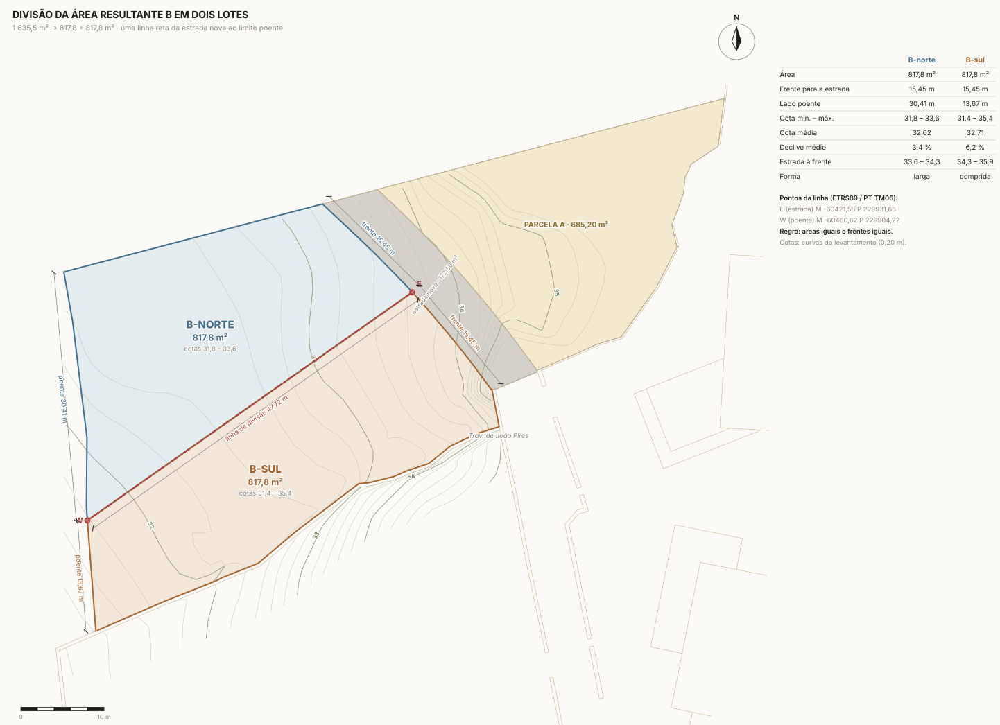</div>
      <p class="cap">Planta da divisão, com o norte para cima. Os pontos E e W da linha estão em ETRS89/PT-TM06.</p>
    </div>
  </div>
</section>

<section id="casas">
  <header><span class="eyebrow">2 · As duas casas</span><h2>As mesmas peças, montadas de duas maneiras</h2>
    <p class="read">As duas casas são T3, só com R/C e sem cave. Têm alpendre para dois carros, piscina, e uma sala de pé-direito alto três degraus abaixo da cozinha. Usar as mesmas peças baixa o custo: um só projeto de estabilidade e de especialidades, os mesmos vãos, os mesmos pormenores. Cada peça tem uma altura própria, e é isso que dá os volumes diferentes.</p>
  </header>
  <ul class="kit">
    <li><b>Ala dos quartos</b><span class="dims">14,40 × 6,00 · pé-direito 2,60 · topo +3,15</span><span>Suite com WC, dois quartos, WC comum. Uma galeria corre pelo lado fechado, com janelas altas.</span></li>
    <li><b>Caixa da sala</b><span class="dims">7,20 × 11,60 · sala 4,11 · cozinha 3,60 · topo +4,25</span><span>Sala, jantar e cozinha com ilha. Clerestório no lado fechado. Cápsula de madeira com o WC social e a lavandaria.</span></li>
    <li><b>Alpendre da piscina</b><span class="dims">4,00 × 4,40 · laje 0,25 · muro de granito</span><span>Sala de verão ao lado da água. Na Fase 2 fecha e passa a escritório ou estúdio.</span></li>
    <li><b>Alpendre de estacionamento</b><span class="dims">6,00 × 5,60 + arrumos 1,20</span><span>Laje fina sobre pilares metálicos, com arrumos e área técnica (piscina, AQS).</span></li>
    <li><b>Piscina</b><span class="dims">9,00 × 3,50 · 8,00 × 3,50 em B-sul</span><span>Ao nível da sala, atrás da caixa alta. Não se vê da casa de A nem da estrada.</span></li>
  </ul>
  <div class="houses">
    <article class="N">
      <h3>Casa do Pátio</h3>
      <p>No lote largo, a casa fecha-se em L. A ala dos quartos encosta ao lado norte, junto à mata. A caixa alta da sala fica a nascente, entre o pátio e a estrada. O pátio com a piscina abre-se para sul e poente, e o bico do lote fica para jardim.</p>
      <ul>
        <li>Entra-se pelo pátio de entrada a norte, com uma rampa suave de 1:16. A porta dá para a cozinha.</li>
        <li>Os quartos abrem para um terraço de granito sobre o pátio, 3 degraus acima do deck.</li>
        <li>A sala está 0,5 m abaixo do terreno do lado da estrada e fica ao nível do pátio.</li>
        <li>R/C 32,95 · sala e deck 32,44 · topo da caixa 37,20</li>
      </ul>
    </article>
    <article class="S">
      <h3>Casa Comprida</h3>
      <p>Na faixa estreita, a casa segue o lote: o alpendre dos carros junto à estrada, depois a ala dos quartos, a caixa alta da sala e, no fim, o alpendre e a piscina no bico poente. Os quartos dão para um jardim privado a sul.</p>
      <ul>
        <li>Entra-se pelo topo da ala. A galeria leva da porta até à sala, que é o ponto alto da casa.</li>
        <li>A sala abre em dois lados, para o alpendre com a piscina e para o jardim sul.</li>
        <li>A casa assenta num socalco de granito, um pouco acima do terreno a poente.</li>
        <li>R/C 33,45 · sala e deck 32,94 · topo da caixa 37,70</li>
      </ul>
    </article>
  </div>
  <p class="read"><b>Materiais.</b> Reboco de cal branco sobre isolamento térmico (ETICS); granito nos muros, no embasamento e no deck; portadas de correr em ripado de pinho tratado nos quartos; caixilharia cor de bronze; coberturas planas em seixo. Vistas da casa de A, as coberturas são a quinta fachada. Uma cobertura verde extensiva custa cerca de 20 €/m² a mais e fica como opção.</p>
</section>

<section id="imagens">
  <header><span class="eyebrow">3 · Imagens</span><h2>Como se vive</h2></header>
  <div class="gallery">
    <figure>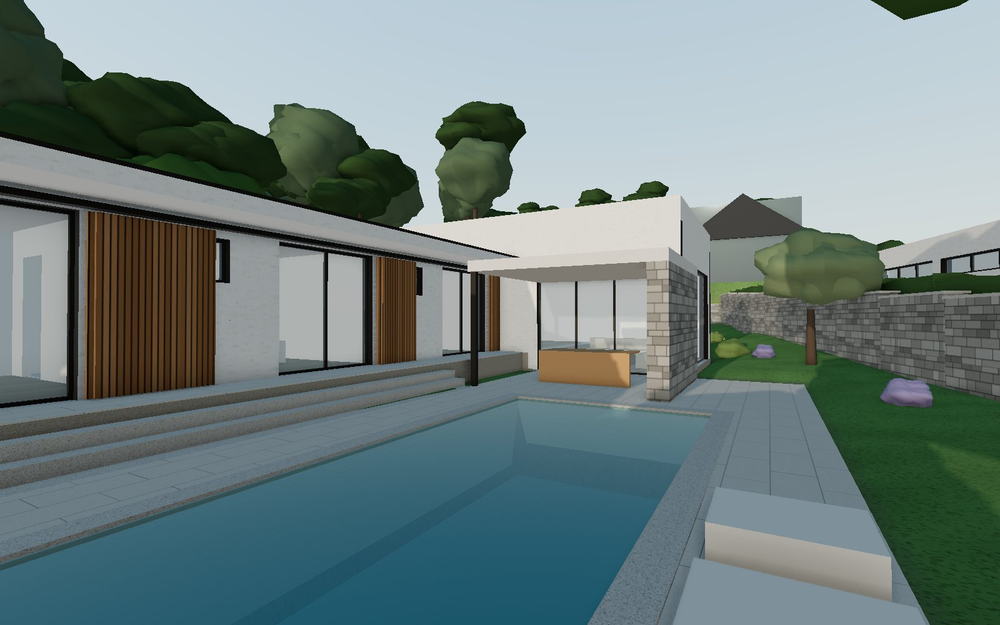<figcaption><b>Pátio da Casa do Pátio.</b> A ala dos quartos com pala e portadas de madeira. Ao fundo, o alpendre à frente da sala alta.</figcaption></figure>
    <figure>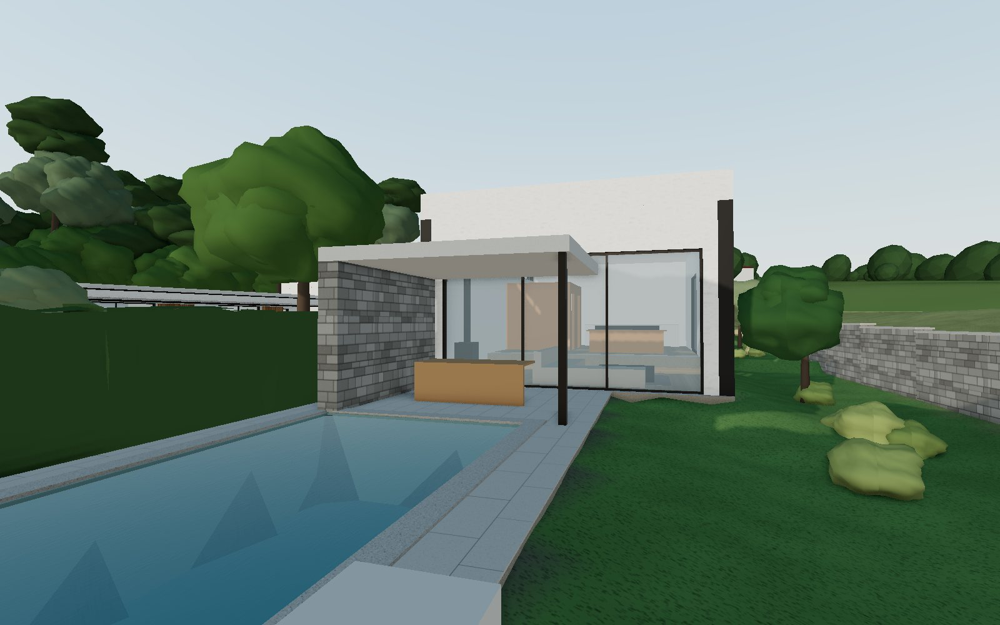<figcaption><b>Piscina da Casa Comprida.</b> O alpendre é a sala de verão, entre a água e a sala.</figcaption></figure>
    <figure>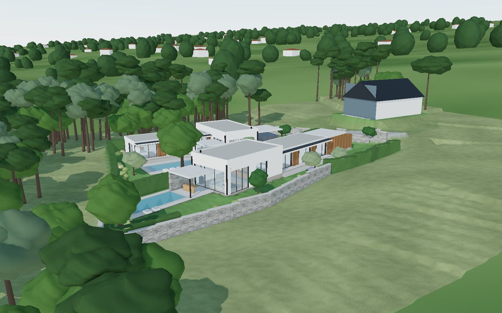<figcaption><b>Vista de sudoeste.</b> Muro de granito no limite sul, junto à piscina e ao jardim. Sebes nos outros limites.</figcaption></figure>
    <figure>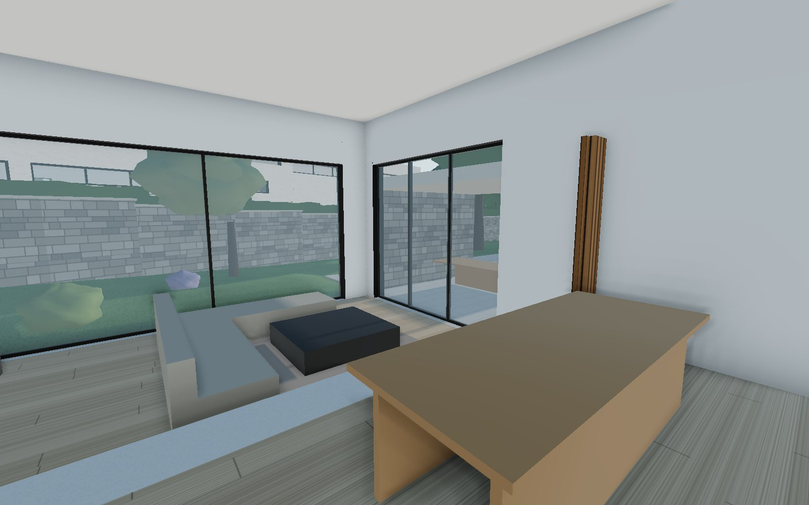<figcaption><b>Sala da Casa do Pátio.</b> Pé-direito de 4,11 m. A luz entra pelo clerestório e pelos vãos para o alpendre e para sul.</figcaption></figure>
    <figure>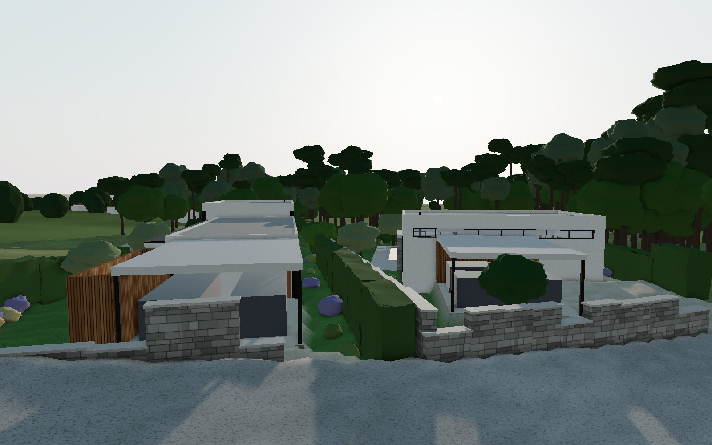<figcaption><b>Da casa de A.</b> As coberturas ficam abaixo dos olhos de quem está na sala de A. As piscinas ficam escondidas atrás das caixas altas.</figcaption></figure>
    <figure>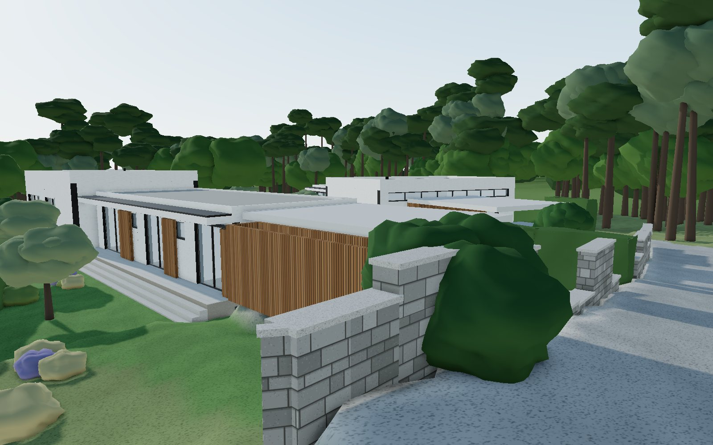<figcaption><b>Da estrada.</b> Dois portões e dois alpendres. Das casas, só se vêem as fachadas fechadas.</figcaption></figure>
    <figure>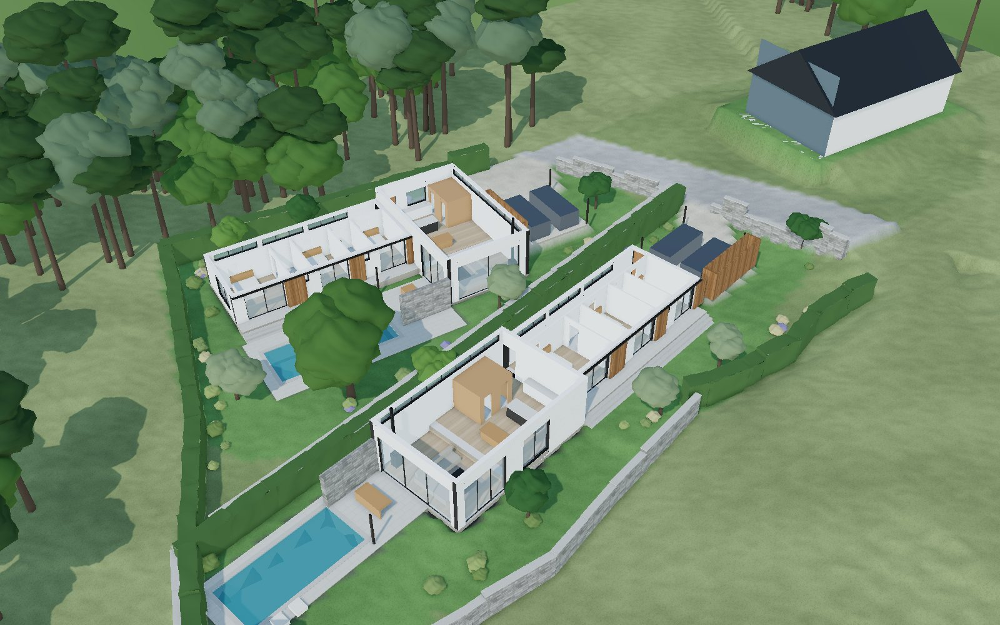<figcaption><b>Maquete sem coberturas.</b> As duas plantas lado a lado, com as mesmas peças.</figcaption></figure>
    <figure><figcaption><b>Vista de poente.</b> Os dois lotes, a estrada nova e a casa de A.</figcaption></figure>
  </div>
  <p class="note">Imagens de estudo, saídas do mesmo modelo que gera as plantas. A vegetação está desenhada como já crescida. As árvores fora do terreno são indicativas, porque não estão no levantamento.</p>
</section>

<section id="desenhos">
  <header><span class="eyebrow">4 · Peças desenhadas</span><h2>Plantas, cortes e alçados</h2></header>
  <div class="tabs" role="tablist" aria-label="Escolher desenho">
    <button role="tab" id="t-imp" aria-selected="true" data-src="implantacao.svg" data-cap="Implantação das duas casas, com o norte para cima. Tracejado fino: afastamento de 3 m aos limites.">Implantação</button>
    <button role="tab" id="t-pn" aria-selected="false" data-src="planta_patio.svg" data-cap="Planta do R/C da Casa do Pátio. A tracejado vermelho, o alpendre fechado na Fase 2.">Planta · Casa do Pátio</button>
    <button role="tab" id="t-ps" aria-selected="false" data-src="planta_comprida.svg" data-cap="Planta do R/C da Casa Comprida. A tracejado vermelho, o alpendre fechado na Fase 2.">Planta · Casa Comprida</button>
    <button role="tab" id="t-ca" aria-selected="false" data-src="corte_aa.svg" data-cap="Corte A-A pela caixa da sala da Casa do Pátio: sala três degraus abaixo da cozinha.">Corte A-A</button>
    <button role="tab" id="t-cb" aria-selected="false" data-src="corte_bb.svg" data-cap="Corte B-B pela Casa Comprida inteira, da piscina ao portão.">Corte B-B</button>
    <button role="tab" id="t-cp" aria-selected="false" data-src="corte_patios.svg" data-cap="Corte pelos dois pátios, perpendicular à linha de divisão, com o sol ao meio-dia em dezembro e em junho.">Corte pelos dois pátios</button>
    <button role="tab" id="t-cv" aria-selected="false" data-src="corte_vista_A.svg" data-cap="Corte pela vista da casa de A: a caixa alta da Casa do Pátio fica abaixo dos olhos e esconde a piscina.">Corte pela vista de A</button>
    <button role="tab" id="t-an" aria-selected="false" data-src="alcado_patio.svg" data-cap="Alçado sul da Casa do Pátio, visto do pátio.">Alçado · Casa do Pátio</button>
    <button role="tab" id="t-as" aria-selected="false" data-src="alcado_comprida.svg" data-cap="Alçado sul da Casa Comprida, visto do jardim.">Alçado · Casa Comprida</button>
    <button role="tab" id="t-dv" aria-selected="false" data-src="divisao.svg" data-cap="Planta da divisão da área resultante B.">Divisão</button>
  </div>
  <div class="prancha" role="tabpanel" aria-labelledby="t-imp">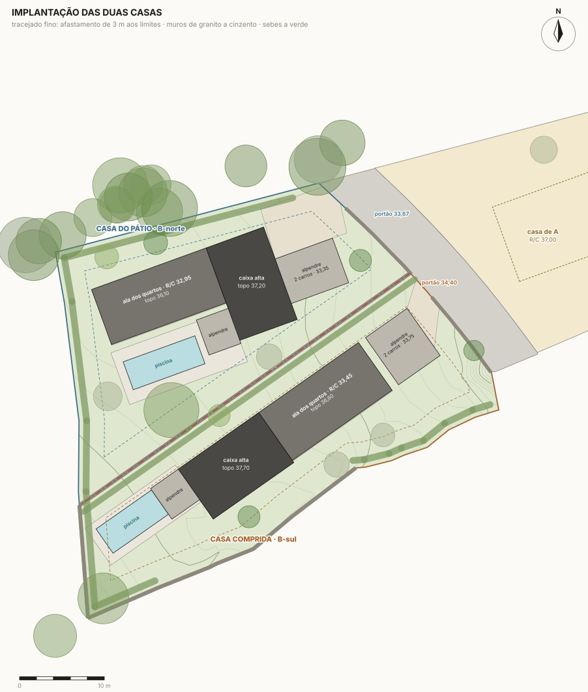</div>
  <p class="cap" id="drawcap">Implantação das duas casas, com o norte para cima. Tracejado fino: afastamento de 3 m aos limites.</p>
</section>

<section id="modelo">
  <header><span class="eyebrow">5 · Modelo 3D</span><h2>Dar a volta às duas casas</h2><p class="read note">Arraste para rodar e use a roda ou dois dedos para aproximar. Os botões levam aos pontos de vista das imagens. O mesmo modelo segue em SketchUp na pasta do projeto.</p></header>
  <div class="viewer" id="viewer">
    
    <div class="overlay"><button class="btn" id="open3d" type="button">Abrir o modelo 3D</button><span id="status3d" aria-live="polite"></span></div>
  </div>
  <div class="controls3d" id="controls3d" hidden>
    <button class="btn ghost" type="button" data-cam="aerial">Aérea</button>
    <button class="btn ghost" type="button" data-cam="aerial2">Sudoeste</button>
    <button class="btn ghost" type="button" data-cam="courtN">Pátio</button>
    <button class="btn ghost" type="button" data-cam="courtS">Piscina B-sul</button>
    <button class="btn ghost" type="button" data-cam="livingN">Sala</button>
    <button class="btn ghost" type="button" data-cam="fromA">Da casa de A</button>
    <button class="btn ghost" type="button" data-cam="road">Estrada</button>
    <button class="btn ghost" type="button" data-cam="cutaway">Maquete</button>
    <label for="noroof"><input type="checkbox" id="noroof"> sem coberturas</label>
    <label for="dusk"><input type="checkbox" id="dusk"> fim de tarde</label>
  </div>
</section>

<section id="areas">
  <header><span class="eyebrow">6 · Programa e áreas</span><h2>O que pediu, onde está</h2></header>
  <div class="cols">
    <div class="tbl">
      <table>
        <thead><tr><th>Compartimento (m² úteis)</th><th class="n">cada casa</th></tr></thead>
        <tbody><tr><td>Sala</td><td class='n'>27,1</td></tr><tr><td>Cozinha · jantar</td><td class='n'>32,8</td></tr><tr><td>Degraus entre cozinha e sala</td><td class='n'>5,3</td></tr><tr><td>Galeria</td><td class='n'>16,6</td></tr><tr><td>Suite (quarto 1)</td><td class='n'>17,1</td></tr><tr><td>WC suite</td><td class='n'>6,5</td></tr><tr><td>Quarto 2</td><td class='n'>12,2</td></tr><tr><td>Quarto 3</td><td class='n'>11,1</td></tr><tr><td>WC comum</td><td class='n'>7,3</td></tr><tr><td>WC social</td><td class='n'>3,3</td></tr><tr><td>Lavandaria · despensa</td><td class='n'>3,3</td></tr>
          <tr class="sum"><td>Área útil · Casa do Pátio / Casa Comprida</td><td class="n">142,7 / 142,5</td></tr>
          <tr><td>Área bruta de construção</td><td class="n">169,9</td></tr>
          <tr><td>Alpendre da piscina (Fase 2: fechado)</td><td class="n">17,6</td></tr>
          <tr><td>Alpendre de estacionamento + arrumos</td><td class="n">33,6 + 6,7</td></tr>
          <tr><td>Índice de utilização no lote (Fase 1 → Fase 2)</td><td class="n">0,21 → 0,23</td></tr>
        </tbody>
      </table>
    </div>
    <ul class="stack" style="margin:0;padding-left:1.1em">
      <li><b>T3</b>: suite com WC de 6,5 m², quartos de 12,2 e 11,1 m², WC comum de 7,3 m² e WC social na cápsula.</li>
      <li><b>Só R/C, sem cave.</b> A diferença de 0,51 m entre a cozinha e a sala segue o declive e dá altura à sala.</li>
      <li><b>Volumes diferentes</b>: três alturas (alpendres, quartos, sala). A caixa da sala sobe 1,10 m acima da ala.</li>
      <li><b>Pé-direito alto na sala</b>: 4,11 m na sala e 3,60 m na cozinha e jantar.</li>
      <li><b>Alpendre para estacionar</b> dois carros, com arrumos e área técnica.</li>
      <li><b>Piscina</b> num pátio fechado, escondida da casa de A, da estrada e do vizinho.</li>
      <li><b>Crescer depois</b>: o alpendre da piscina fecha e passa a escritório ou estúdio (ver a secção 7).</li>
    </ul>
  </div>
</section>

<section id="crescer">
  <header><span class="eyebrow">7 · Crescer depois</span><h2>A estrutura fica feita, a casa cresce para dentro</h2></header>
  <div class="two">
    <div class="stack read">
      <p>O alpendre da piscina é construído logo com a laje, o pilar, o muro de granito do fundo e os tubos de água, esgoto e eletricidade já deixados para um duche. Na Fase 2 levam-se duas frentes de correr, isolamento, pavimento e teto. Ganha-se um escritório, estúdio ou quarto de hóspedes de cerca de 15 m² úteis, com porta para o deck. O volume visto de fora fica igual.</p>
      <p>Custa cerca de 11,8 k€. O índice de utilização passa de 0,21 para 0,23, uma margem que a maior parte dos índices habitacionais comporta. O arquiteto confirma com o PDM.</p>
      <p><b>A licença.</b> Fechar o alpendre aumenta a área bruta, por isso tem de ser licenciado. Há duas formas de o fazer:</p>
      <ul>
        <li><b>Licenciar já a casa com execução por fases</b> (RJUE, art. 59.º). A Fase 1 tem autorização de utilização própria e a Fase 2 fica aprovada. É a mesma via que o MQT v4.2 refere para o 1.º piso da casa de A.</li>
        <li><b>Pedir a ampliação mais tarde</b>, por comunicação prévia ou licença.</li>
      </ul>
      <p>Fechar o alpendre sem esse passo traria problemas no registo e na venda.</p>
    </div>
    <div class="stack">
      <div class="prancha tall">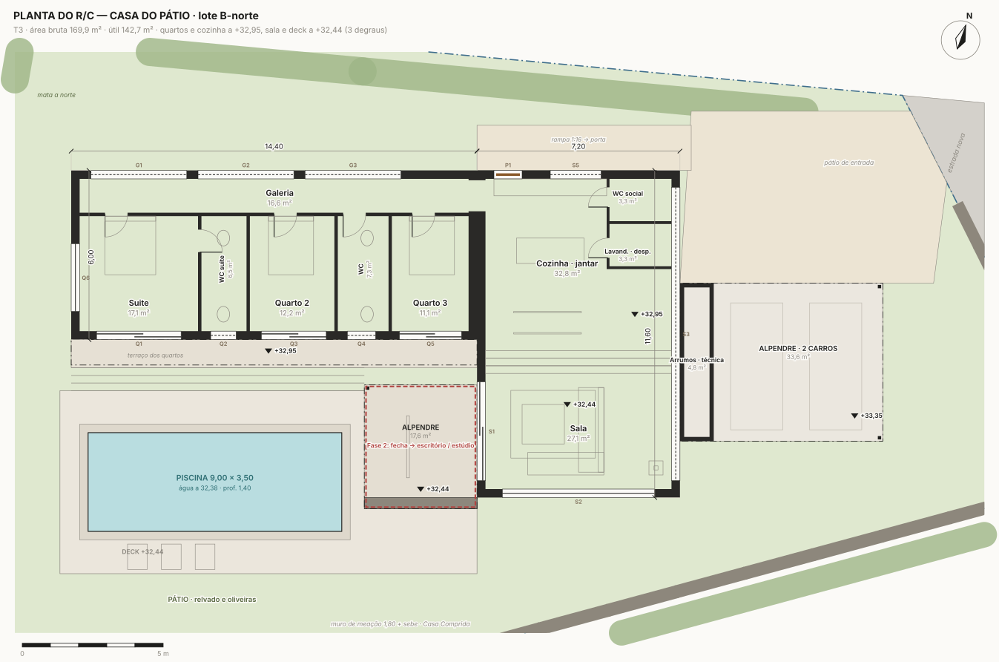</div>
      <p class="cap">Fase 2 a tracejado vermelho: o alpendre da piscina fechado.</p>
    </div>
  </div>
</section>

<section id="vista">
  <header><span class="eyebrow">8 · Vista e privacidade</span><h2>A vista de A passa por cima; as piscinas ficam na sombra</h2></header>
  <div class="prancha">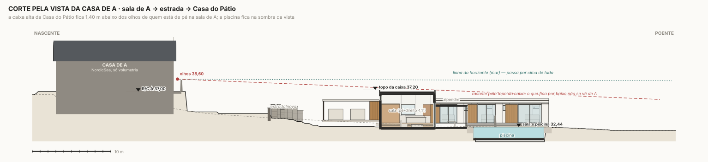</div>
  <div class="cols">
    <div class="stack read">
      <p>Na sala de A, os olhos de quem está de pé ficam a 38,60. A caixa alta da Casa do Pátio, que está mesmo à frente, tem o topo a 37,20, 1,40 m abaixo dos olhos. A ala dos quartos fica a 36,10. A Casa Comprida está 20° para a esquerda do eixo da sala de A, com a caixa a 37,70 e a ala a 36,60. A linha do horizonte passa por cima de tudo.</p>
      <p>Sentado no sofá de A, com os olhos a ≈ 38,20, as caixas tapam o mar mais próximo, a menos de 1–2 km. O horizonte continua à vista. Se se quiser manter o critério do topo a 37,00, há duas formas, sem mexer na planta:</p>
      <ul>
        <li>baixar a sala da Casa Comprida mais 0,5 m;</li>
        <li>reduzir o pé-direito da sala para 3,60 m.</li>
      </ul>
    </div>
    <div class="stack read">
      <p><b>Privacidade, de onde vem cada vista:</b></p>
      <ul>
        <li><b>Casa de A e estrada</b>, a nascente e mais alto: as caixas altas e os alpendres ficam entre elas e as piscinas.</li>
        <li><b>Entre as duas casas</b>: muro de meação de granito com 1,80 m e sebe. A Casa Comprida mostra à vizinha só uma parede cega, com o clerestório acima dos 2,90 m.</li>
        <li><b>Mata a norte e campo a sul</b>: sebe a norte; a sul, muro de granito junto à piscina e ao jardim.</li>
      </ul>
      <p class="note">Ao meio-dia de dezembro, a caixa da Casa Comprida faz sombra na piscina da Casa do Pátio (ver o corte pelos dois pátios). De abril a setembro não faz.</p>
    </div>
  </div>
</section>

<section id="custo">
  <header><span class="eyebrow">9 · Custo</span><h2>Quanto custa cada casa</h2>
    <p class="read">Estimativa sem IVA, com quantidades medidas sobre o modelo e os preços unitários do MQT v4.2 da casa de A (Norte de Portugal, 2025/26). Os artigos sem par no MQT, como os muros de granito, a cápsula de madeira e o embasamento, estão marcados como estimativa.</p>
  </header>
  <div class="bignums">
    <div><span class="v N">162,0 k€</span><span class="kk">Casa do Pátio, casa e exteriores (953 €/m²)</span></div>
    <div><span class="v N">+ 19,2 k€</span><span class="kk">piscina 9,00 × 3,50</span></div>
    <div><span class="v S">170,9 k€</span><span class="kk">Casa Comprida, casa e exteriores (1 006 €/m²)</span></div>
    <div><span class="v S">+ 17,1 k€</span><span class="kk">piscina 8,00 × 3,50</span></div>
  </div>
  <div class="cols">
    <div class="tbl"><table>
      <thead><tr><th class="N">Casa do Pátio</th><th class="n">sem IVA</th></tr></thead>
      <tbody><tr><td>Estaleiro e terras</td><td class='n'>9,8 k€</td></tr><tr><td>Estrutura</td><td class='n'>25,2 k€</td></tr><tr><td>Envolvente (paredes, cobertura, fachadas)</td><td class='n'>34,3 k€</td></tr><tr><td>Caixilharia, vidros e serralharia</td><td class='n'>18,3 k€</td></tr><tr><td>Acabamentos, carpintarias e loiças</td><td class='n'>19,1 k€</td></tr><tr><td>Instalações</td><td class='n'>26,2 k€</td></tr><tr><td>Exteriores (deck, alpendres, muros, acessos)</td><td class='n'>29,0 k€</td></tr><tr class="sub"><td>Piscina</td><td class='n'>19,2 k€</td></tr><tr class="sub"><td>Fase 2 — depois da licença de utilização</td><td class='n'>19,2 k€</td></tr><tr class="sum"><td>Total com piscina e Fase 2</td><td class="n">200,4 k€</td></tr></tbody>
    </table></div>
    <div class="tbl"><table>
      <thead><tr><th class="S">Casa Comprida</th><th class="n">sem IVA</th></tr></thead>
      <tbody><tr><td>Estaleiro e terras</td><td class='n'>9,7 k€</td></tr><tr><td>Estrutura</td><td class='n'>25,2 k€</td></tr><tr><td>Envolvente (paredes, cobertura, fachadas)</td><td class='n'>34,6 k€</td></tr><tr><td>Caixilharia, vidros e serralharia</td><td class='n'>22,0 k€</td></tr><tr><td>Acabamentos, carpintarias e loiças</td><td class='n'>19,1 k€</td></tr><tr><td>Instalações</td><td class='n'>26,2 k€</td></tr><tr><td>Exteriores (deck, alpendres, muros, acessos)</td><td class='n'>34,2 k€</td></tr><tr class="sub"><td>Piscina</td><td class='n'>17,1 k€</td></tr><tr class="sub"><td>Fase 2 — depois da licença de utilização</td><td class='n'>19,5 k€</td></tr><tr class="sum"><td>Total com piscina e Fase 2</td><td class="n">207,5 k€</td></tr></tbody>
    </table></div>
  </div>
  <div class="stack read">
    <p>A Casa Comprida custa mais cerca de 9 k€ por três razões:</p>
    <ul>
      <li>tem mais vidro, porque a sala abre em dois lados;</li>
      <li>tem o troço de muro de granito a sul;</li>
      <li>precisa de aterro, porque assenta num socalco.</li>
    </ul>
    <p>A Casa do Pátio tem o contrário: sobram-lhe cerca de 100 m³ de terra da escavação da piscina e do rebaixo da sala. Juntando os 80 m³ que sobram da obra de A, há terra que chega para os aterros da Casa Comprida. As três obras ganham em ser feitas em conjunto ou seguidas.</p>
    <p class="note">Fora destes valores: projeto de arquitetura e especialidades, licenças e taxas, ligações às redes, IVA, e o portão automóvel e o jardim (estes dois estão na Fase 2). A estação elevatória de esgotos entra como contingência de 2,1 k€ por casa, até a Águas do Alto Minho dizer a cota da ligação.</p>
  </div>
  <details><summary>Mapa de quantidades · Casa do Pátio</summary><div class="tbl"><table><thead><tr><th>Artigo</th><th class="n">Qtd</th><th>Un</th><th class="n">€/un</th><th class="n">Total</th></tr></thead><tbody><tr class='grp'><td colspan='5'>Estaleiro e terras</td></tr><tr><td>Estaleiro (vedação, instalações, energia e água de obra, PSS) — como o 01.01</td><td class='n'>1</td><td>vg</td><td class='n'>4 500</td><td class='n'>4 500 €</td></tr><tr><td>Implantação topográfica em ETRS89 (01.02)</td><td class='n'>1</td><td>vg</td><td class='n'>650</td><td class='n'>650 €</td></tr><tr><td>Decapagem da terra vegetal sob a casa, deck e acessos (guardada para o jardim) — 02.08</td><td class='n'>1</td><td>vg</td><td class='n'>300</td><td class='n'>300 €</td></tr><tr><td>Escavação: fundações, piscina e rebaixo da sala (02.01)</td><td class='n'>157,6</td><td>m³</td><td class='n'>7</td><td class='n'>1 103 €</td></tr><tr><td>Reutilização das terras da obra nos aterros da casa, deck e acessos (02.03)</td><td class='n'>31,9</td><td>m³</td><td class='n'>4</td><td class='n'>128 €</td></tr><tr><td>Aterro compactado sob lajes e deck (02.05)</td><td class='n'>31,9</td><td>m³</td><td class='n'>6</td><td class='n'>191 €</td></tr><tr><td>Sobrante espalhado e modelado no próprio lote (02.04)</td><td class='n'>102,1</td><td>m³</td><td class='n'>5</td><td class='n'>510 €</td></tr><tr><td>Modelação final do terreno e taludes 1:4 (02.04)</td><td class='n'>220,0</td><td>m²</td><td class='n'>5</td><td class='n'>1 100 €</td></tr><tr><td>Contingência para rocha (granito) — metade do 02.R1 (escavação pequena)</td><td class='n'>1</td><td>vg</td><td class='n'>1 365</td><td class='n'>1 365 €</td></tr><tr class='grp'><td colspan='5'>Estrutura</td></tr><tr><td>Betão de limpeza (03.01)</td><td class='n'>6,3</td><td>m³</td><td class='n'>95</td><td class='n'>600 €</td></tr><tr><td>Sapatas contínuas 0,70 × 0,40 sob as paredes exteriores + isoladas dos alpendres (03.02)</td><td class='n'>23,3</td><td>m³</td><td class='n'>190</td><td class='n'>4 423 €</td></tr><tr><td>Laje térrea armada e=0,15 da ala e da caixa, em dois níveis (03.05)</td><td class='n'>169,9</td><td>m²</td><td class='n'>39</td><td class='n'>6 627 €</td></tr><tr><td>Lintel/muro de 0,51 entre a cozinha e a sala, em betão armado</td><td class='n'>1,1</td><td>m³</td><td class='n'>460</td><td class='n'>497 €</td></tr><tr><td>Pilares, cintas e vigas (lintéis dos vãos grandes, viga de bordo da pala) — 03.06/03.08</td><td class='n'>7,5</td><td>m³</td><td class='n'>445</td><td class='n'>3 338 €</td></tr><tr><td>Laje aligeirada de cobertura h=0,25/0,30 (03.11)</td><td class='n'>169,9</td><td>m²</td><td class='n'>48</td><td class='n'>8 156 €</td></tr><tr><td>Pala de 0,90 m sobre a fachada dos quartos — laje maciça (03.09b)</td><td class='n'>3,2</td><td>m³</td><td class='n'>480</td><td class='n'>1 555 €</td></tr><tr class='grp'><td colspan='5'>Envolvente (paredes, cobertura, fachadas)</td></tr><tr><td>Alvenaria exterior em tijolo 15 / bloco térmico, com vergas (04.01)</td><td class='n'>185,3</td><td>m²</td><td class='n'>24</td><td class='n'>4 447 €</td></tr><tr><td>Divisórias em gesso cartonado (normal e hidrófugo nos WC) — 04.02/04.02b</td><td class='n'>83,6</td><td>m²</td><td class='n'>28,5</td><td class='n'>2 382 €</td></tr><tr><td>Cápsula de serviço em contraplacado de carvalho sobre estrutura leve (WC social + lavandaria)</td><td class='n'>13,2</td><td>m²</td><td class='n'>65</td><td class='n'>858 €</td></tr><tr><td>Cobertura plana invertida: pendentes, impermeabilização, XPS 120, seixo, ralos, trop-plein (base Plinto)</td><td class='n'>169,9</td><td>m²</td><td class='n'>52</td><td class='n'>8 836 €</td></tr><tr><td>Capeamento das platibandas e topo da pala em chapa quinada (05.04)</td><td class='n'>80,2</td><td>m</td><td class='n'>38</td><td class='n'>3 048 €</td></tr><tr><td>Fachada ETICS EPS 80 mm com acabamento areado fino branco (cal) — 07.01</td><td class='n'>194,4</td><td>m²</td><td class='n'>48</td><td class='n'>9 329 €</td></tr><tr><td>Embasamento: faixa de granito amaciado 0,30 na base das fachadas (estimativa)</td><td class='n'>76,0</td><td>m</td><td class='n'>32</td><td class='n'>2 432 €</td></tr><tr><td>Isolamento XPS 60 sob a laje térrea + membrana anti-radão (06.04 + 06.R4)</td><td class='n'>169,9</td><td>m²</td><td class='n'>14</td><td class='n'>2 379 €</td></tr><tr><td>Membrana anti-radão e despressurização passiva (06.R4)</td><td class='n'>1</td><td>vg</td><td class='n'>600</td><td class='n'>600 €</td></tr><tr class='grp'><td colspan='5'>Caixilharia, vidros e serralharia</td></tr><tr><td>Portas de correr em PVC foliado bronze, vidro duplo baixo-emissivo (08.02) — sala, jantar, quartos</td><td class='n'>28,9</td><td>m²</td><td class='n'>290</td><td class='n'>8 377 €</td></tr><tr><td>Sobrecusto de vidro de controlo solar nos vãos a sul e poente (08.02b)</td><td class='n'>17,3</td><td>m²</td><td class='n'>35</td><td class='n'>607 €</td></tr><tr><td>Vãos fixos: clerestório da caixa e janelas altas da galeria (08.01)</td><td class='n'>28,1</td><td>m²</td><td class='n'>150</td><td class='n'>4 219 €</td></tr><tr><td>Janelas (WC e suite) em PVC foliado (08.04)</td><td class='n'>8,1</td><td>m²</td><td class='n'>220</td><td class='n'>1 778 €</td></tr><tr><td>Porta de entrada pivotante revestida a madeira, blindada (base Plinto)</td><td class='n'>1</td><td>vg</td><td class='n'>1 450</td><td class='n'>1 450 €</td></tr><tr><td>Portadas de correr em ripado de pinho tratado nos 3 quartos: calhas e quadros em aço (ripado pelo dono de obra)</td><td class='n'>3,0</td><td>un</td><td class='n'>520</td><td class='n'>1 560 €</td></tr><tr><td>Estores/blackout interiores nos quartos</td><td class='n'>3,0</td><td>un</td><td class='n'>90</td><td class='n'>270 €</td></tr><tr class='grp'><td colspan='5'>Acabamentos, carpintarias e loiças</td></tr><tr><td>Betonilha de regularização (09.00)</td><td class='n'>142,7</td><td>m²</td><td class='n'>11</td><td class='n'>1 570 €</td></tr><tr><td>Pavimento vinílico SPC aspeto carvalho — sala, cozinha, galeria (09.01b)</td><td class='n'>81,8</td><td>m²</td><td class='n'>25</td><td class='n'>2 045 €</td></tr><tr><td>Pavimento laminado AC4 aspeto carvalho — quartos (09.02)</td><td class='n'>40,5</td><td>m²</td><td class='n'>13</td><td class='n'>526 €</td></tr><tr><td>Porcelânico antiderrapante nos WC e lavandaria + azulejo nos duches (09.04 + 09.04b)</td><td class='n'>20,5</td><td>m²</td><td class='n'>52</td><td class='n'>1 065 €</td></tr><tr><td>Estuque projetado nas paredes interiores (09.07)</td><td class='n'>170,5</td><td>m²</td><td class='n'>11</td><td class='n'>1 875 €</td></tr><tr><td>Tetos em estuque projetado direto na laje; teto falso hidrófugo nos WC (09.08)</td><td class='n'>166,9</td><td>m²</td><td class='n'>13</td><td class='n'>2 170 €</td></tr><tr><td>Degraus interiores (3 × 6,60 m) em betão afagado com focinho de madeira</td><td class='n'>3,0</td><td>un</td><td class='n'>160</td><td class='n'>480 €</td></tr><tr><td>Portas interiores (7) — compra direta do dono de obra (10.01)</td><td class='n'>7,0</td><td>un</td><td class='n'>165</td><td class='n'>1 155 €</td></tr><tr><td>Cozinha: móveis, bancada em pedra e ilha (10.04, com ilha)</td><td class='n'>1</td><td>vg</td><td class='n'>5 500</td><td class='n'>5 500 €</td></tr><tr><td>Loiças e torneiras: 3 WC e lava-loiça (cap. 11 do MQT)</td><td class='n'>1</td><td>vg</td><td class='n'>2 100</td><td class='n'>2 100 €</td></tr><tr><td>Tintas e rodapés — compra do dono de obra (09.11/09.12)</td><td class='n'>1</td><td>vg</td><td class='n'>650</td><td class='n'>650 €</td></tr><tr class='grp'><td colspan='5'>Instalações</td></tr><tr><td>Águas e esgotos: ramal, rede interior (14 pontos), coletores enterrados, 2 caixas de visita (cap. 12)</td><td class='n'>1</td><td>vg</td><td class='n'>6 900</td><td class='n'>6 900 €</td></tr><tr><td>Estação elevatória de esgotos — CONTINGÊNCIA: só se a ligação à rede da estrada não for gravítica (12.08)</td><td class='n'>1</td><td>vg</td><td class='n'>2 100</td><td class='n'>2 100 €</td></tr><tr><td>Pluviais: 4 tubos de queda, rede enterrada, poço de infiltração no jardim (cap. 13)</td><td class='n'>1</td><td>vg</td><td class='n'>3 100</td><td class='n'>3 100 €</td></tr><tr><td>Eletricidade e ITED: ligação, quadro, ≈ 30 pontos de luz, ≈ 45 tomadas, exterior, terras, pré-FV e pré-carregador (cap. 14)</td><td class='n'>1</td><td>vg</td><td class='n'>9 600</td><td class='n'>9 600 €</td></tr><tr><td>AQS por bomba de calor 200 L; pré-instalação AC (4 un); extração contínua; grelhas (cap. 15)</td><td class='n'>1</td><td>vg</td><td class='n'>4 500</td><td class='n'>4 500 €</td></tr><tr class='grp'><td colspan='5'>Exteriores (deck, alpendres, muros, acessos)</td></tr><tr><td>Deck da piscina em lajes de granito amaciado sobre laje armada (base Plinto)</td><td class='n'>47,8</td><td>m²</td><td class='n'>62</td><td class='n'>2 963 €</td></tr><tr><td>Terraço dos quartos e degraus em granito (base Plinto, 16.05)</td><td class='n'>22,8</td><td>m²</td><td class='n'>70</td><td class='n'>1 598 €</td></tr><tr><td>Alpendre da piscina: laje maciça 0,25 + pilar metálico + muro de granito do fundo</td><td class='n'>1</td><td>vg</td><td class='n'>4 122</td><td class='n'>4 122 €</td></tr><tr><td>Alpendre de estacionamento: laje maciça 0,25 sobre pilares metálicos + arrumos em bloco e ripado</td><td class='n'>1</td><td>vg</td><td class='n'>7 029</td><td class='n'>7 029 €</td></tr><tr><td>Pavimento do alpendre, pátio de entrada e rampa em saibro estabilizado / grelha (16.02)</td><td class='n'>106,5</td><td>m²</td><td class='n'>22</td><td class='n'>2 344 €</td></tr><tr><td>Muro de meação em granito, h 1,80 (metade do muro, partilhado com o vizinho) — estimativa</td><td class='n'>42,9</td><td>m² face</td><td class='n'>150</td><td class='n'>6 442 €</td></tr><tr><td>Muro baixo de granito na frente da estrada, h 1,20, com portão pedonal (estimativa + 08.21)</td><td class='n'>18,5</td><td>m² face</td><td class='n'>150</td><td class='n'>2 781 €</td></tr><tr><td>Sebes nos restantes limites (loureiro/pitósporo, plantas e rega; plantação pelo dono de obra)</td><td class='n'>75,0</td><td>m</td><td class='n'>22</td><td class='n'>1 650 €</td></tr><tr><td>Pré-instalação do portão automóvel (tubo, caixa) — o portão fica para depois (08.22b)</td><td class='n'>1</td><td>vg</td><td class='n'>80</td><td class='n'>80 €</td></tr><tr class='grp'><td colspan='5'>Piscina</td></tr><tr><td>Piscina 9,00 × 3,50 × 1,40: bloco armado, liner armado, filtração salina, LED, capeamento em granito (base Plinto)</td><td class='n'>1</td><td>vg</td><td class='n'>19 250</td><td class='n'>19 250 €</td></tr><tr class='grp'><td colspan='5'>Fase 2 — depois da licença de utilização</td></tr><tr><td>Fechar o alpendre da piscina: 2 frentes de correr (≈ 20 m²), isolamento, pavimento, teto, duche/WC pequeno → escritório/estúdio</td><td class='n'>1</td><td>vg</td><td class='n'>11 800</td><td class='n'>11 800 €</td></tr><tr><td>Portão automóvel de correr 4 m em aço lacado (08.22)</td><td class='n'>1</td><td>vg</td><td class='n'>2 200</td><td class='n'>2 200 €</td></tr><tr><td>Jardim: terra vegetal, relvado nos pátios, árvores (oliveiras, medronheiros, carvalho), rega gota-a-gota (16.06)</td><td class='n'>243,0</td><td>m²</td><td class='n'>9</td><td class='n'>2 187 €</td></tr><tr><td>Salamandra + chaminé em inox preto (05.06 + 10.05)</td><td class='n'>1</td><td>vg</td><td class='n'>3 000</td><td class='n'>3 000 €</td></tr></tbody></table></div></details>
  <details><summary>Mapa de quantidades · Casa Comprida</summary><div class="tbl"><table><thead><tr><th>Artigo</th><th class="n">Qtd</th><th>Un</th><th class="n">€/un</th><th class="n">Total</th></tr></thead><tbody><tr class='grp'><td colspan='5'>Estaleiro e terras</td></tr><tr><td>Estaleiro (vedação, instalações, energia e água de obra, PSS) — como o 01.01</td><td class='n'>1</td><td>vg</td><td class='n'>4 500</td><td class='n'>4 500 €</td></tr><tr><td>Implantação topográfica em ETRS89 (01.02)</td><td class='n'>1</td><td>vg</td><td class='n'>650</td><td class='n'>650 €</td></tr><tr><td>Decapagem da terra vegetal sob a casa, deck e acessos (guardada para o jardim) — 02.08</td><td class='n'>1</td><td>vg</td><td class='n'>300</td><td class='n'>300 €</td></tr><tr><td>Escavação: fundações, piscina (02.01)</td><td class='n'>100,8</td><td>m³</td><td class='n'>7</td><td class='n'>706 €</td></tr><tr><td>Reutilização das terras da obra nos aterros da casa, deck e acessos (02.03)</td><td class='n'>85,7</td><td>m³</td><td class='n'>4</td><td class='n'>343 €</td></tr><tr><td>Aterro compactado sob lajes e deck (02.05)</td><td class='n'>96,1</td><td>m³</td><td class='n'>6</td><td class='n'>577 €</td></tr><tr><td>Terras de empréstimo para completar o aterro (02.06)</td><td class='n'>10,4</td><td>m³</td><td class='n'>14</td><td class='n'>146 €</td></tr><tr><td>Modelação final do terreno e taludes 1:4 (02.04)</td><td class='n'>220,0</td><td>m²</td><td class='n'>5</td><td class='n'>1 100 €</td></tr><tr><td>Contingência para rocha (granito) — metade do 02.R1 (escavação pequena)</td><td class='n'>1</td><td>vg</td><td class='n'>1 365</td><td class='n'>1 365 €</td></tr><tr class='grp'><td colspan='5'>Estrutura</td></tr><tr><td>Betão de limpeza (03.01)</td><td class='n'>6,3</td><td>m³</td><td class='n'>95</td><td class='n'>600 €</td></tr><tr><td>Sapatas contínuas 0,70 × 0,40 sob as paredes exteriores + isoladas dos alpendres (03.02)</td><td class='n'>23,3</td><td>m³</td><td class='n'>190</td><td class='n'>4 423 €</td></tr><tr><td>Laje térrea armada e=0,15 da ala e da caixa, em dois níveis (03.05)</td><td class='n'>169,9</td><td>m²</td><td class='n'>39</td><td class='n'>6 627 €</td></tr><tr><td>Lintel/muro de 0,51 entre a cozinha e a sala, em betão armado</td><td class='n'>1,1</td><td>m³</td><td class='n'>460</td><td class='n'>497 €</td></tr><tr><td>Pilares, cintas e vigas (lintéis dos vãos grandes, viga de bordo da pala) — 03.06/03.08</td><td class='n'>7,5</td><td>m³</td><td class='n'>445</td><td class='n'>3 338 €</td></tr><tr><td>Laje aligeirada de cobertura h=0,25/0,30 (03.11)</td><td class='n'>169,9</td><td>m²</td><td class='n'>48</td><td class='n'>8 156 €</td></tr><tr><td>Pala de 0,90 m sobre a fachada dos quartos — laje maciça (03.09b)</td><td class='n'>3,2</td><td>m³</td><td class='n'>480</td><td class='n'>1 555 €</td></tr><tr class='grp'><td colspan='5'>Envolvente (paredes, cobertura, fachadas)</td></tr><tr><td>Alvenaria exterior em tijolo 15 / bloco térmico, com vergas (04.01)</td><td class='n'>183,9</td><td>m²</td><td class='n'>24</td><td class='n'>4 414 €</td></tr><tr><td>Divisórias em gesso cartonado (normal e hidrófugo nos WC) — 04.02/04.02b</td><td class='n'>83,8</td><td>m²</td><td class='n'>28,5</td><td class='n'>2 389 €</td></tr><tr><td>Cápsula de serviço em contraplacado de carvalho sobre estrutura leve (WC social + lavandaria)</td><td class='n'>18,5</td><td>m²</td><td class='n'>65</td><td class='n'>1 201 €</td></tr><tr><td>Cobertura plana invertida: pendentes, impermeabilização, XPS 120, seixo, ralos, trop-plein (base Plinto)</td><td class='n'>169,9</td><td>m²</td><td class='n'>52</td><td class='n'>8 836 €</td></tr><tr><td>Capeamento das platibandas e topo da pala em chapa quinada (05.04)</td><td class='n'>80,2</td><td>m</td><td class='n'>38</td><td class='n'>3 048 €</td></tr><tr><td>Fachada ETICS EPS 80 mm com acabamento areado fino branco (cal) — 07.01</td><td class='n'>193,0</td><td>m²</td><td class='n'>48</td><td class='n'>9 264 €</td></tr><tr><td>Embasamento: faixa de granito amaciado 0,30 na base das fachadas (estimativa)</td><td class='n'>76,0</td><td>m</td><td class='n'>32</td><td class='n'>2 432 €</td></tr><tr><td>Isolamento XPS 60 sob a laje térrea + membrana anti-radão (06.04 + 06.R4)</td><td class='n'>169,9</td><td>m²</td><td class='n'>14</td><td class='n'>2 379 €</td></tr><tr><td>Membrana anti-radão e despressurização passiva (06.R4)</td><td class='n'>1</td><td>vg</td><td class='n'>600</td><td class='n'>600 €</td></tr><tr class='grp'><td colspan='5'>Caixilharia, vidros e serralharia</td></tr><tr><td>Portas de correr em PVC foliado bronze, vidro duplo baixo-emissivo (08.02) — sala, jantar, quartos</td><td class='n'>53,8</td><td>m²</td><td class='n'>290</td><td class='n'>15 598 €</td></tr><tr><td>Sobrecusto de vidro de controlo solar nos vãos a sul e poente (08.02b)</td><td class='n'>32,3</td><td>m²</td><td class='n'>35</td><td class='n'>1 129 €</td></tr><tr><td>Vãos fixos: clerestório da caixa e janelas altas da galeria (08.01)</td><td class='n'>11,3</td><td>m²</td><td class='n'>150</td><td class='n'>1 700 €</td></tr><tr><td>Janelas (WC e suite) em PVC foliado (08.04)</td><td class='n'>1,3</td><td>m²</td><td class='n'>220</td><td class='n'>293 €</td></tr><tr><td>Porta de entrada pivotante revestida a madeira, blindada (base Plinto)</td><td class='n'>1</td><td>vg</td><td class='n'>1 450</td><td class='n'>1 450 €</td></tr><tr><td>Portadas de correr em ripado de pinho tratado nos 3 quartos: calhas e quadros em aço (ripado pelo dono de obra)</td><td class='n'>3,0</td><td>un</td><td class='n'>520</td><td class='n'>1 560 €</td></tr><tr><td>Estores/blackout interiores nos quartos</td><td class='n'>3,0</td><td>un</td><td class='n'>90</td><td class='n'>270 €</td></tr><tr class='grp'><td colspan='5'>Acabamentos, carpintarias e loiças</td></tr><tr><td>Betonilha de regularização (09.00)</td><td class='n'>142,5</td><td>m²</td><td class='n'>11</td><td class='n'>1 568 €</td></tr><tr><td>Pavimento vinílico SPC aspeto carvalho — sala, cozinha, galeria (09.01b)</td><td class='n'>82,0</td><td>m²</td><td class='n'>25</td><td class='n'>2 049 €</td></tr><tr><td>Pavimento laminado AC4 aspeto carvalho — quartos (09.02)</td><td class='n'>40,5</td><td>m²</td><td class='n'>13</td><td class='n'>526 €</td></tr><tr><td>Porcelânico antiderrapante nos WC e lavandaria + azulejo nos duches (09.04 + 09.04b)</td><td class='n'>20,1</td><td>m²</td><td class='n'>52</td><td class='n'>1 044 €</td></tr><tr><td>Estuque projetado nas paredes interiores (09.07)</td><td class='n'>169,2</td><td>m²</td><td class='n'>11</td><td class='n'>1 861 €</td></tr><tr><td>Tetos em estuque projetado direto na laje; teto falso hidrófugo nos WC (09.08)</td><td class='n'>166,9</td><td>m²</td><td class='n'>13</td><td class='n'>2 170 €</td></tr><tr><td>Degraus interiores (3 × 6,60 m) em betão afagado com focinho de madeira</td><td class='n'>3,0</td><td>un</td><td class='n'>160</td><td class='n'>480 €</td></tr><tr><td>Portas interiores (7) — compra direta do dono de obra (10.01)</td><td class='n'>7,0</td><td>un</td><td class='n'>165</td><td class='n'>1 155 €</td></tr><tr><td>Cozinha: móveis, bancada em pedra e ilha (10.04, com ilha)</td><td class='n'>1</td><td>vg</td><td class='n'>5 500</td><td class='n'>5 500 €</td></tr><tr><td>Loiças e torneiras: 3 WC e lava-loiça (cap. 11 do MQT)</td><td class='n'>1</td><td>vg</td><td class='n'>2 100</td><td class='n'>2 100 €</td></tr><tr><td>Tintas e rodapés — compra do dono de obra (09.11/09.12)</td><td class='n'>1</td><td>vg</td><td class='n'>650</td><td class='n'>650 €</td></tr><tr class='grp'><td colspan='5'>Instalações</td></tr><tr><td>Águas e esgotos: ramal, rede interior (14 pontos), coletores enterrados, 2 caixas de visita (cap. 12)</td><td class='n'>1</td><td>vg</td><td class='n'>6 900</td><td class='n'>6 900 €</td></tr><tr><td>Estação elevatória de esgotos — CONTINGÊNCIA: só se a ligação à rede da estrada não for gravítica (12.08)</td><td class='n'>1</td><td>vg</td><td class='n'>2 100</td><td class='n'>2 100 €</td></tr><tr><td>Pluviais: 4 tubos de queda, rede enterrada, poço de infiltração no jardim (cap. 13)</td><td class='n'>1</td><td>vg</td><td class='n'>3 100</td><td class='n'>3 100 €</td></tr><tr><td>Eletricidade e ITED: ligação, quadro, ≈ 30 pontos de luz, ≈ 45 tomadas, exterior, terras, pré-FV e pré-carregador (cap. 14)</td><td class='n'>1</td><td>vg</td><td class='n'>9 600</td><td class='n'>9 600 €</td></tr><tr><td>AQS por bomba de calor 200 L; pré-instalação AC (4 un); extração contínua; grelhas (cap. 15)</td><td class='n'>1</td><td>vg</td><td class='n'>4 500</td><td class='n'>4 500 €</td></tr><tr class='grp'><td colspan='5'>Exteriores (deck, alpendres, muros, acessos)</td></tr><tr><td>Deck da piscina em lajes de granito amaciado sobre laje armada (base Plinto)</td><td class='n'>23,3</td><td>m²</td><td class='n'>62</td><td class='n'>1 445 €</td></tr><tr><td>Terraço dos quartos e degraus em granito (base Plinto, 16.05)</td><td class='n'>26,1</td><td>m²</td><td class='n'>70</td><td class='n'>1 824 €</td></tr><tr><td>Alpendre da piscina: laje maciça 0,25 + pilar metálico + muro de granito do fundo</td><td class='n'>1</td><td>vg</td><td class='n'>4 122</td><td class='n'>4 122 €</td></tr><tr><td>Alpendre de estacionamento: laje maciça 0,25 sobre pilares metálicos + arrumos em bloco e ripado</td><td class='n'>1</td><td>vg</td><td class='n'>7 178</td><td class='n'>7 178 €</td></tr><tr><td>Pavimento do alpendre, pátio de entrada e rampa em saibro estabilizado / grelha (16.02)</td><td class='n'>56,4</td><td>m²</td><td class='n'>22</td><td class='n'>1 241 €</td></tr><tr><td>Muro de meação em granito, h 1,80 (metade do muro, partilhado com o vizinho) — estimativa</td><td class='n'>42,9</td><td>m² face</td><td class='n'>150</td><td class='n'>6 442 €</td></tr><tr><td>Muro baixo de granito na frente da estrada, h 1,20, com portão pedonal (estimativa + 08.21)</td><td class='n'>18,5</td><td>m² face</td><td class='n'>150</td><td class='n'>2 781 €</td></tr><tr><td>Muro de granito no limite sul, só no troço da piscina e do jardim (≈ 30 m), h 1,80 — estimativa</td><td class='n'>54,0</td><td>m² face</td><td class='n'>150</td><td class='n'>8 100 €</td></tr><tr><td>Sebes nos restantes limites (loureiro/pitósporo, plantas e rega; plantação pelo dono de obra)</td><td class='n'>44,0</td><td>m</td><td class='n'>22</td><td class='n'>968 €</td></tr><tr><td>Pré-instalação do portão automóvel (tubo, caixa) — o portão fica para depois (08.22b)</td><td class='n'>1</td><td>vg</td><td class='n'>80</td><td class='n'>80 €</td></tr><tr class='grp'><td colspan='5'>Piscina</td></tr><tr><td>Piscina 8,00 × 3,50 × 1,40: bloco armado, liner armado, filtração salina, LED, capeamento em granito (base Plinto)</td><td class='n'>1</td><td>vg</td><td class='n'>17 100</td><td class='n'>17 100 €</td></tr><tr class='grp'><td colspan='5'>Fase 2 — depois da licença de utilização</td></tr><tr><td>Fechar o alpendre da piscina: 2 frentes de correr (≈ 20 m²), isolamento, pavimento, teto, duche/WC pequeno → escritório/estúdio</td><td class='n'>1</td><td>vg</td><td class='n'>11 800</td><td class='n'>11 800 €</td></tr><tr><td>Portão automóvel de correr 4 m em aço lacado (08.22)</td><td class='n'>1</td><td>vg</td><td class='n'>2 200</td><td class='n'>2 200 €</td></tr><tr><td>Jardim: terra vegetal, relvado nos pátios, árvores (oliveiras, medronheiros, carvalho), rega gota-a-gota (16.06)</td><td class='n'>279,0</td><td>m²</td><td class='n'>9</td><td class='n'>2 511 €</td></tr><tr><td>Salamandra + chaminé em inox preto (05.06 + 10.05)</td><td class='n'>1</td><td>vg</td><td class='n'>3 000</td><td class='n'>3 000 €</td></tr></tbody></table></div></details>
</section>

<section id="condicionantes">
  <header><span class="eyebrow">10 · Antes de avançar</span><h2>O que falta confirmar</h2></header>
  <div class="alert read">
    <h3>Primeiro: se a divisão de B pode ser um destaque</h3>
    <p>Se o PIP divide o terreno por destaque da parcela A, a lei não deixa fazer um novo destaque na área do prédio original durante 10 anos (RJUE, art. 6.º). Esse ónus de não fracionamento fica inscrito no registo. Se for assim, B não se pode dividir agora por destaque. Fora do perímetro urbano há ainda outra exigência: a parcela que sobra tem de ter a área da unidade de cultura, e 818 m² não chegam. Há duas saídas a discutir com o arq. Arezes:</p>
    <ul>
      <li><b>Loteamento de três lotes desde já</b> (A, B-norte e B-sul), em vez do destaque de A. A cedência da estrada encaixa bem num loteamento.</li>
      <li><b>B como um só lote com duas moradias em propriedade horizontal.</b> Cada fração tem uso exclusivo do seu jardim e da sua piscina, com a mesma linha de divisão. Exige que o PDM admita duas habitações no lote.</li>
    </ul>
    <p>O desenho das casas serve para qualquer uma das três vias.</p>
  </div>
  <div class="tbl">
    <table>
      <thead><tr><th>Tema</th><th>O que assumi</th><th>Estado</th></tr></thead>
      <tbody>
        <tr><td>PDM de Viana do Castelo</td><td>B é solo urbano e admite moradias isoladas de 1 piso. Índice usado: 0,21.</td><td><span class="chip bad">perguntar</span> classificação, índices, cércea, alinhamentos</td></tr>
        <tr><td>Afastamentos</td><td>3,0 m aos limites para a casa e os alpendres; 3,0 m à estrada para o alpendre dos carros</td><td><span class="chip warn">confirmar</span> no regulamento do PDM</td></tr>
        <tr><td>Piscina da Casa Comprida</td><td>a 1,74 m do limite poente, no bico do lote</td><td><span class="chip warn">confirmar</span> afastamento mínimo de piscinas</td></tr>
        <tr><td>Cobertura plana</td><td>coberturas planas em seixo, como na Plinto</td><td><span class="chip warn">confirmar</span> se o PDM pede telhado inclinado</td></tr>
        <tr><td>Esgotos</td><td>ligação à rede da estrada; elevatória como contingência</td><td><span class="chip warn">Águas do Alto Minho</span> cota e posição do coletor</td></tr>
        <tr><td>Acesso à Casa Comprida</td><td>rampa curta (≈ 0,65 m em 5 m, ≈ 13 %) do portão a 34,40 para o alpendre a 33,75</td><td><span class="chip warn">confirmar</span> com a cota final da estrada nova</td></tr>
        <tr><td>Cotas</td><td>curvas do levantamento de 0,20 em 0,20 m, com cota dada pelas curvas mestras</td><td><span class="chip ok">bom</span> o pip.dxf original confirma ao ponto</td></tr>
        <tr><td>Vista do mar desde A</td><td>arvoredo a poente de B indicativo (não levantado)</td><td><span class="chip warn">verificar</span> no local, à altura da sala de A</td></tr>
        <tr><td>Terras</td><td>sobra na Casa do Pátio, falta na Casa Comprida</td><td><span class="chip ok">sinergia</span> com os 80 m³ que sobram de A</td></tr>
      </tbody>
    </table>
  </div>
  <div class="stack read">
    <h3>Próximos passos</h3>
    <ul>
      <li>Levar ao arquiteto a questão do destaque e as perguntas do PDM.</li>
      <li>Pedir a cota da rede de esgotos às Águas do Alto Minho.</li>
      <li>Escolher a via (loteamento, destaque futuro ou propriedade horizontal).</li>
      <li>Afinar as casas: acabamentos, cozinha, quartos.</li>
      <li>Fazer o MQT completo na estrutura do v4.2 para pedir propostas.</li>
    </ul>
  </div>
</section>

<footer>
  <p>Dados de partida:</p>
  <ul>
    <li>polígonos do PIP em ETRS89/PT-TM06;</li>
    <li>curvas de nível e limites do levantamento;</li>
    <li>folha 02 do PIP do arq. Henrique Arezes;</li>
    <li>MQT v4.2 da casa de A.</li>
  </ul>
  <p>A divisão, as plantas, os cortes, os alçados, as imagens, o modelo 3D e os custos saem todos da mesma geometria (pasta <span class="mono">docs/terreno-poente</span>). É um estudo de ideia e não substitui o projeto de arquitetura nem as especialidades.</p>
  <p class="mono">03/10/2026</p>
</footer>

<script>
(function () {
  const tabs = document.querySelectorAll('.tabs button');
  const img = document.getElementById('drawing'); const cap = document.getElementById('drawcap');
  const panel = document.querySelector('.prancha[role="tabpanel"]');
  tabs.forEach(function (b) {
    b.addEventListener('click', function () {
      tabs.forEach(function (x) { x.setAttribute('aria-selected', x === b ? 'true' : 'false'); });
      img.src = b.dataset.src; img.alt = b.textContent; cap.textContent = b.dataset.cap; panel.setAttribute('aria-labelledby', b.id);
    });
  });
})();
</script>
<script type="importmap">{"imports":{"three":"https://cdn.jsdelivr.net/npm/three@0.169.0/build/three.module.js","three/addons/":"https://cdn.jsdelivr.net/npm/three@0.169.0/examples/jsm/"}}</script>
<script type="module">
const openBtn = document.getElementById('open3d'); const status = document.getElementById('status3d');
const viewer = document.getElementById('viewer'); const ctl = document.getElementById('controls3d');
openBtn.addEventListener('click', start, { once: true });
async function start() {
  openBtn.disabled = true; status.textContent = 'A carregar o modelo…';
  try {
    const [THREE, oc, sk, sc] = await Promise.all([import('three'), import('three/addons/controls/OrbitControls.js'), import('three/addons/objects/Sky.js'), import('./scene.js')]);
    const spec = await (await fetch('spec.json')).json();
    const R = sc.buildScene(THREE, sk.Sky, spec); R.sun.shadow.mapSize.set(2048, 2048);
    const renderer = new THREE.WebGLRenderer({ antialias: true });
    renderer.setPixelRatio(Math.min(window.devicePixelRatio || 1, 2));
    renderer.toneMapping = THREE.ACESFilmicToneMapping; renderer.toneMappingExposure = 0.78;
    renderer.shadowMap.enabled = true; renderer.shadowMap.type = THREE.PCFSoftShadowMap;
    viewer.appendChild(renderer.domElement);
    const cam = new THREE.PerspectiveCamera(45, 1.6, 0.1, 30000);
    const controls = new oc.OrbitControls(cam, renderer.domElement); controls.maxPolarAngle = Math.PI * 0.495;
    const pm = new THREE.PMREMGenerator(renderer); let dusk = false, current = 'aerial';
    function env() { const s = new THREE.Scene(); s.add(R.sky.clone()); if (R.scene.environment) R.scene.environment.dispose(); R.scene.environment = pm.fromScene(s, 0, 0.1, 30000).texture; R.scene.environmentIntensity = dusk ? 0.35 : 0.5; }
    function size() { const w = viewer.clientWidth, h = viewer.clientHeight; renderer.setSize(w, h, false); cam.aspect = w / h; cam.updateProjectionMatrix(); draw(); }
    function draw() { renderer.render(R.scene, cam); }
    function go(name) {
      const c = spec.cams[name]; current = name;
      cam.fov = c.fov; cam.position.copy(R.P(...c.p)); controls.target.copy(R.P(...c.t)); cam.updateProjectionMatrix(); controls.update();
      const nr = !!c.noroof || document.getElementById('noroof').checked; R.groups.roof.forEach(m => { m.visible = !nr; });
      R.setTime(dusk ? spec.cams.courtN.sun : c.sun, dusk); renderer.toneMappingExposure = dusk ? 0.85 : 0.78; env(); draw();
    }
    controls.addEventListener('change', draw); new ResizeObserver(size).observe(viewer);
    viewer.querySelector('.poster').hidden = true; viewer.querySelector('.overlay').hidden = true; ctl.hidden = false;
    ctl.querySelectorAll('[data-cam]').forEach(b => b.addEventListener('click', () => go(b.dataset.cam)));
    document.getElementById('noroof').addEventListener('change', ev => { R.groups.roof.forEach(m => { m.visible = !ev.target.checked; }); draw(); });
    document.getElementById('dusk').addEventListener('change', ev => { dusk = ev.target.checked; go(current); });
    size(); go('aerial');
  } catch (err) {
    openBtn.disabled = false; status.textContent = 'Não foi possível abrir o modelo neste dispositivo. As imagens acima mostram as mesmas vistas.'; console.error(err);
  }
}
</script>
